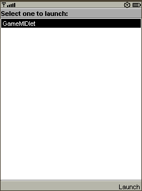
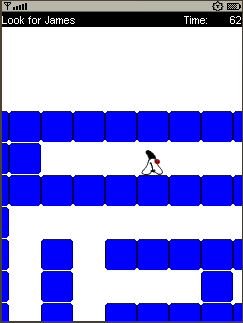

Exercise 3: Logic of the game
Introduction:
The logic of our game is quite simple. There is the Duke creature walking in a maze.
The Duke is looking for James Gosling who is lost somewhere in the maze.
When he finds James the game ends.
We created the sprites in previous exercise. We also created one level of our game.
Duke can move left and right. He can jump. When there is no floor under his feets then he starts falling.
The code for movement of the duke is based on the example provided by Carol Hamer in "Creating Mobile Games: Using Java ME Platform to Put the Fun into Your Mobile Device and Cell Phone" by Appress.
Steps to follow:
- Initialize the MazeManager
- Let the duke move
Step 1: Initialize the MazeManager
-
There are following classes created for you in the org.netbeans.j1.game.logic package that
take care about processing the game. The GameTread.java class runs in separate thread to
not block the game ui. The MazeManager.java class takes care about the interaction among the
sprites and tiled layers in the game.
At first we have to initialize all the game parts. Copy and paste code in bold to init method of the MazeManager class.public void init() throws Exception { //TODO: [Exercise 3][step 1] - initialization code. Please, don't forget to fix the missing imports and fields mazeDesign = new MazeGameDesign(); //[Exercise3] jamesSprite = mazeDesign.getJamesS();//[Exercise3] dukeSprite = mazeDesign.getDukeS();//[Exercise3] dukeSprite.defineReferencePixel(dukeSprite.getWidth() / 2, 0);//[Exercise3] dukeSpriteAnimator = new SpriteAnimationTask(dukeSprite, false);//[Exercise3] myWalls = mazeDesign.getMaze1();//[Exercise3] mazeDesign.updateLayerManagerForLevel1(this);//[Exercise3] timer = new Timer();//[Exercise3] timer.scheduleAtFixedRate(dukeSpriteAnimator, 0, mazeDesign.dukeSseq001Delay);//[Exercise3] // this sets the view screen so that the player is // in the center. myViewWindowX = dukeSprite.getX() - ((DISP_HEIGHT - SQUARE_WIDTH) / 2); myViewWindowY = dukeSprite.getY() - ((DISP_HEIGHT - SQUARE_WIDTH) / 2); System.gc(); } -
Fix the missing import for MazeGameDesign class.
You can use the hint bulb to fix the code. Just press the bulb on the glyph or ALT+ENTER on the line with errors.

Figure-3-1: Hints
- Create new field mazeDesign in the class. You can use the hint again.
- Now the game is ready to be played. You can run the application. Right click the MobileGameApp project and choose Run.
-
When the emulator window appears launch the application.

Figure-3-2: Launch game
Figure-3-3: Splash screen

Figure-3-4: Main menu
Figure-3-5: Game running
Step 2: Let the duke move
We need to set up the right sequence to the duke sprite when he is walking, jumping or falling.
- It can be done in MazeManager class in method updateSprite. Just uncomment the four lines ending with //TODO: [Exercise 3][step 2]. It will add the code that changes the sequence of tiles for duke sprite. Therefore the duke will either walk or fall or jump.
-
The source code of the updateSprite() method will look in following way. The bold lines are the uncommented ones.
private void updateSprite(int hdirection, int vdirection) { // if the duke is moving left or right, we set // his image to be facing the right direction if (hdirection > 0) { dukeSprite.setTransform(Sprite.TRANS_NONE); } else if (hdirection < 0) { dukeSprite.setTransform(Sprite.TRANS_MIRROR); } //in case that duke is moving, change the showing sprite image if (lastHorDirection != hdirection) { dukeSprite.setFrameSequence(mazeDesign.dukeSseq001); //TODO: [Exercise 3][step 2] Let the duke move set to vertical sequence } if (lastVertDirection != vdirection) { if (vdirection > 0) { //he's jumping dukeSprite.setFrameSequence(mazeDesign.dukeSfalling);//TODO: [Exercise 3][step 2] set to falling sequence } else if (vdirection < 0) { dukeSprite.setFrameSequence(mazeDesign.dukeSjumping);//TODO: [Exercise 3][step 2] set to jumping sequence } } if ((vdirection != 0) || (hdirection != 0)) { dukeSpriteAnimator.forward(); } else { dukeSpriteAnimator.setMoving(false); dukeSprite.setFrameSequence(mazeDesign.dukeSseq001); //TODO: [Exercise 3][step 2] set to vertical sequence } lastHorDirection = hdirection; lastVertDirection = vdirection; }
Summary:
You created necessary logic for the game. You can now play the game. As you can see the work with the Sprites and TiledLayers is quite simple thank to the Game API. The game logic isn't so complicated however the description of it is beyond scope of this hands-on lab class. The source code is well described with comments and javadoc therefore you can study it later.